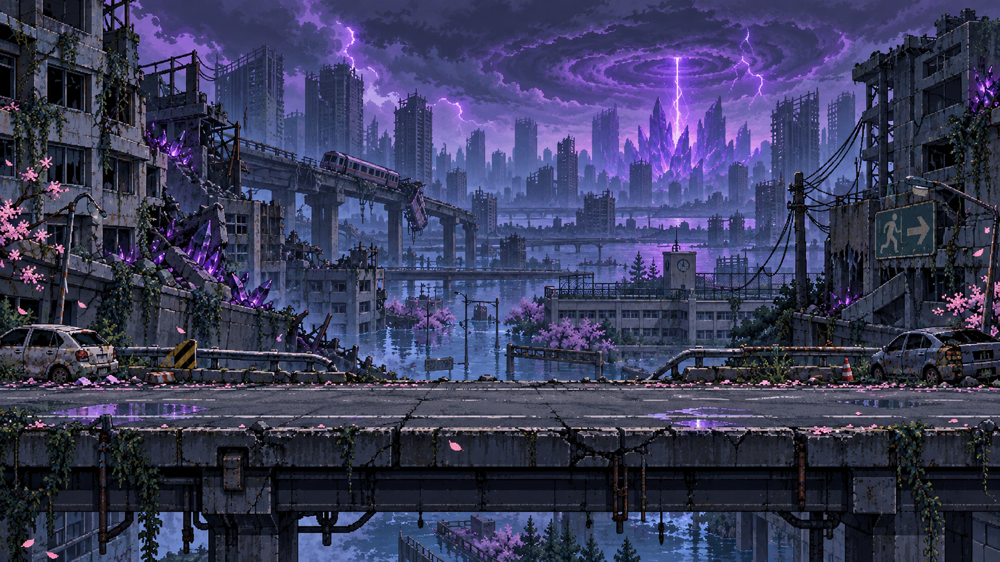
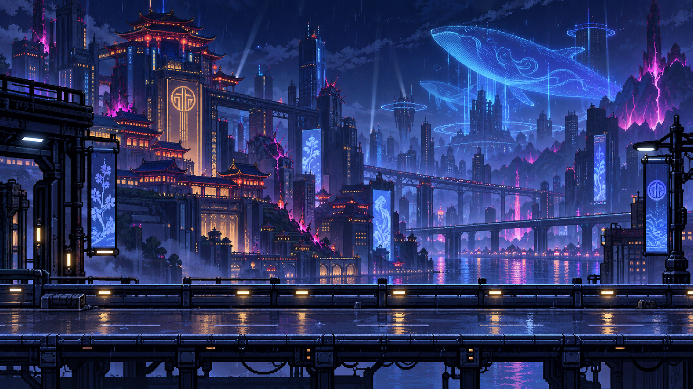
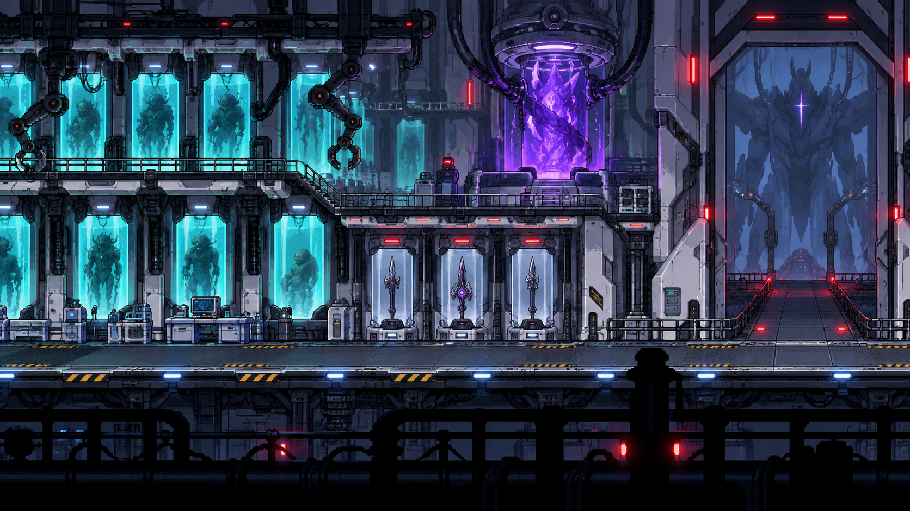
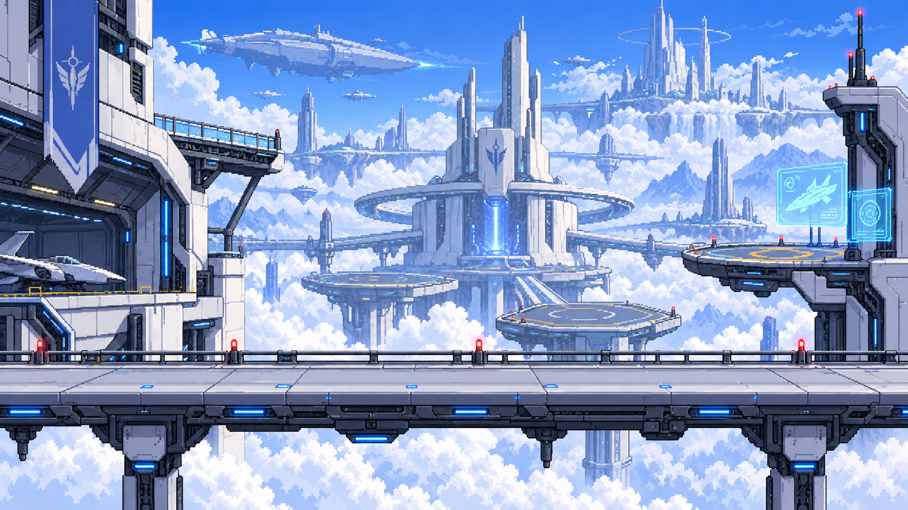
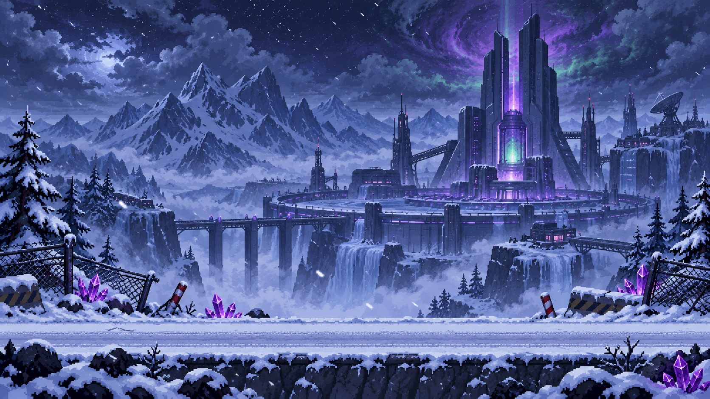
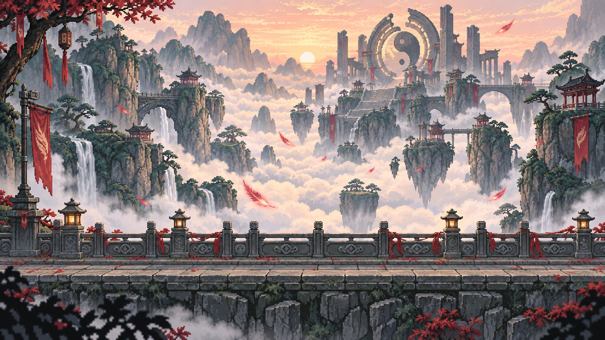
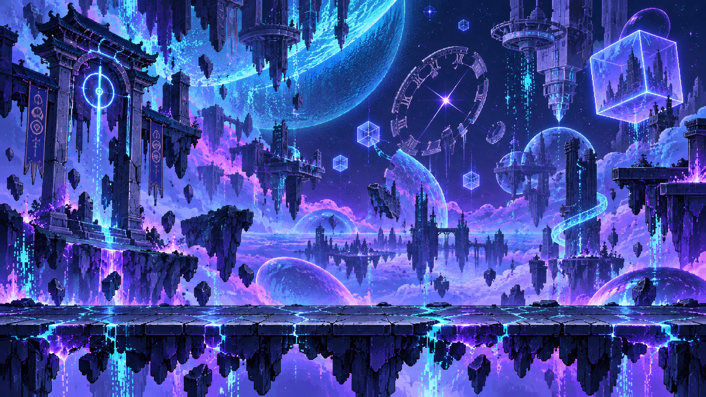
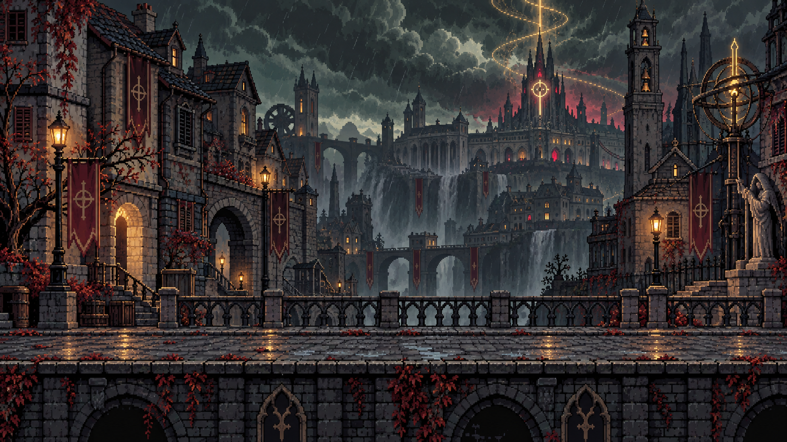
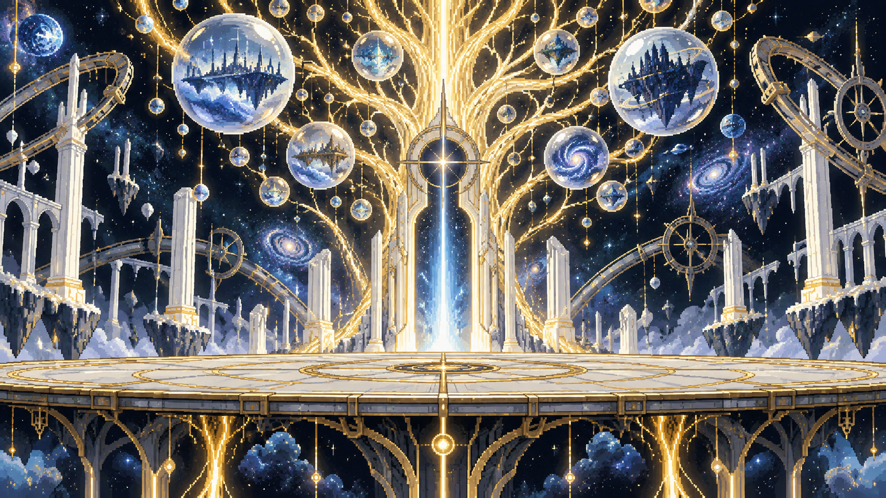

01 / KHÔNG AI NHỚ TA
Những ký ức vỡ.
Một ý thức còn lại.
Giữa tàn tích Nagazora, một giọng nói quen thuộc
đã quên mất bạn.
STORY MODE
01
Không ai nhớ ta
NAGAZORA · ĐÔ THỊ BỊ LÃNG QUÊN
Tỉnh lại → Tìm giọng nói → Phá vòng lặpCHƯƠNG 02 · ĐANG KHÓATHẺ PHỤ
BẢN ĐỒ HÀNH TRÌNH
Bảy chương. Một hành trình hoàn chỉnh.
Từ Nagazora đến Imaginary Tree, toàn bộ bảy chương Story đã mở cùng Album, side story, bàn rèn và Endless.









♪ NHẠC GIAO TRANH · HoS TrailerĐang kết nối SoundCloud…Nguồn: Vortex trên SoundCloud ↗
MEMORY ARCHIVE
Chuẩn Bị
Vật phẩm được nhận trong Story. Nâng cấp tiêu vàng đã nhặt; không có bonus khi ô trang bị trống.